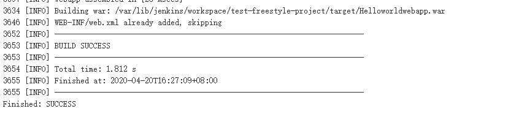

- 01.Jenkins的安装配置与日常维护.md.html
- 02.Jenkins强大的插件功能.md.html
- 03.Devops工具链.md.html
- 04.初探Jenkins CD实践.md.html
- 05.Jenkins常用项目配置参数.md.html
- 06.Jenkins部署之Docker要点.md.html
- 07.Jenkins集成之Ansible要点.md.html
- 08.Jenkins集成Ansible持续部署服务到Docker容器.md.html
- 09.实现自动化引擎之Jenkins Pipeline声明式语法.md.html
- 10.实现自动化引擎之Jenkins Pipeline脚本式语法.md.html
- 11.Pipeline语法进行持续交付与基础实践.md.html
- 12.Jenkins Docker Pipeline插件动态生成Slave节点语法剖析.md.html
- 13.使用 Docker Pipeline插件动态生成Jenkins Slave 实践.md.html
- 14.搞定不同环境下的Jenkins与Kubernetes集群连接配置.md.html
- 15.Jenkins Kubernetes Plugin介绍与语法详解.md.html
- 16.使用Kubernetes编排Jenkins Slave节点持续交付项目.md.html
- 17.使用Kubernetes插件持续部署服务到Kubernetes集群.md.html
- 18.Ansible Plugin插件语法详解与持续部署服务到kubernetes集群.md.html
- 捐赠
04.初探Jenkins CD实践
在了解了Jenkins的系统配置与插件以后，本节开始正式学习一下使用Jenkins进行基础的CD实践。
开始之前要说明的是，本文介绍的部署方法以及脚本等比较基础，旨在介绍使用以及配置jenkins任务（job）的一些流程和方法，在后续的文章中会对部署方法优化和提高，对于不同的场景和需求还需要根据自己的实际情况出发进行项目配置。当然，如果你对jenkins使用或者对持续交付的流程已经很熟了，你也可以略过此章节。
创建Jenkins项目
Jenkins包含多种类型的项目配置，比如freestyle、maven、pipeline等，每种类型的项目都有各自的优缺点以及固定的使用场景，重点在于要根据自己的实际情况选择合适的项目类型创建项目。下面简单介绍一下不同类型的项目的使用。
创建Freestyle类型的项目
Freestyle，创建一个自由风格类型的项目。为什么叫自由风格的项目，个人理解为项目的配置扩展性较强，对于某项步骤的配置操作不局限于某一个特定的插件，实现想要达到的目标的方法具有多样性。
在Jenkins主面板点击”新建“菜单，在跳转到的界面中输入任务名称（比如我创建的job名称为test-freestyle-project），选择”Freestyle project（自由风格项目）“，然后在页面最下面点击确定即可。
点击确定后，跳转到任务（job）配置界面，如下图所示：
该任务包含了如下几个配置步骤（图中红线框内的部分）：
general：用于配置任务构建时的全局配置，比如上面列出的选项框：
Run the build inside Docker containers用来定义构建时是否在docker容器内进行构建；-
Discard old builds用于配置该项目构建的历史记录个数和保存的时间；-
限制项目的运行节点用于配置该项目在指定的Jenkins节点上构建；-
This project is parameterized 用于配置该项目使用参数化构建；
源码管理：用于配置构建时的源代码仓库。从运维角度去使用Jenkins，几乎所有的Job任务都涉及到代码的拉取操作，该步骤就是配置代码仓库的地址和对仓库认证凭据信息。代码仓库的类型主要分为CVS、Git、svn等。
构建触发器：该步骤主要用于配置什么时候运行Job，比如通过”身份令牌”进行远程构建配置；通过设置触发器在某个项目构建完成后在构建本项目，通过计划任务设置定时构建等。
构建环境：构建环境步骤用于设定构建时的工作环境配置，比如配置构建时使用的凭证设置；配置编译代码时使用的特定的配置文件；构建之前发送编译时需要用的文件到服务器或者执行命令等配置。
构建：构建步骤用于进行job构建操作，该步骤针对不同的插件有不同的使用方法。比如用于代码编译操作、比如执行命令、如果遇到需要构建镜像的需求，也可以构建容器镜像等。
构建后操作：该步骤作为整个jenkins 任务配置的最后一步，主要进行一些”收尾”工作，比如部署应用服务操作，有测试操作的生成测试报告；对代码进行质量分析操作、或者在上面操作步骤成功后设置构建其他job任务、发送邮件等操作。
对于jenkins新安装的插件的使用，会在上面列出的一个或者多个步骤中显示插件的使用选项。
相对于其它类型的Job（比如maven、pipeline类型），每种类型的job都有自身特定的配置步骤，并且各配置步骤会根据插件安装的多少也会有所差异，不过大体上的配置步骤都相同。
由于jenkins项目配置的参数选项比较多，而且参数选项会根据插件的安装有所不同，下面就先看一个最简单的使用示例。
在“构建”步骤的”增加构建步骤“选项框里选择Execute shell，该选项表示在目标主机上执行shell命令。需要注意的是，如果在”General“步骤没有对项目的运行节点进行特殊配置，该任务运行的主机为Jenkins master节点，也就是在jenkins master服务器上执行shell命令。
如下所示：

执行结果如下：
输出的结果为jenkins服务所在服务器的主机名。
如果勾选上在”General“步骤中的”限制项目的运行节点“选项框，在”标签表达式“输入框中输入在上一节中添加的slave节点的标签(jenkins-slave1)，在次执行该job，如下所示：
该结果表示在slave节点上执行jenkins job成功。
上面虽然成功执行了jenkins job，而我们使用jenkins的目的可不仅仅是在jenkins服务器上执行简单的shell命令，从运维角度出发，用得最多的就是通过jenkins服务拉取应用代码并编译测试，最后部署到指定的服务器上。
比如，我们使用在上一节中安装Gitlab时创建的test-helloworld仓库时提交的代码作为项目测试用例，通过配置jenkins拉取此项目代码，并使用maven管理工具编译代码。
代码编译
使用freestyle类型的job配置如下，在源码管理步骤中使用git服务。
其中Credntials为创建的对Gitlab仓库认证的凭证，点击上图中的Jenkins选项，在跳转的界面中，在”类型“选项框选择Username with password，并在下面的输入框中输入用户名和密码以及用于区分该凭证的用户，输入好保存即可。然后就可以在Credntials参数的下拉框中看到刚刚创建的凭证了。有关Jenkins凭证的内容，会在下一章节详细介绍。
在”增加构建步骤“的下拉列表中选择 “Invoke top level Maven target“，配置maven构建参数。
构建步骤这里使用maven插件进行构建，其中：
Maven 版本 参数为选择框，如果在Jenkins全局配置中配置了Maven工具的环境变量，这里从下拉列表中会有显示，比如我这里显示的为在Jenkins全局配置里设置的全局名称。
目标 这里应该写maven 编译代码的命令，可用的命令为 clean package/instlall/deploy，这些命令都可以进行代码的编译、测试、打包等操作。
POM 为编译代码时的pom.xml文件，该文件定义了项目的基本信息，用于描述项目如何构建，声明项目依赖等。这里可以写该文件的绝对路径，也可以写相对路径，上面示例配置的为${WORKSPACE}变量（jenkins自带的环境变量）路径下的pom.xml，也就是本项目工作目录下的pom.xml文件，所以这里也可以直接写pom.xml而不加任何路径。
Java 虚拟机参数 配置maven编译代码时的参数，上面示例配置参数为跳过执行src/test/java中的JUnit测试用例。
配置文件 这里设置的为maven编译代码时使用的配置文件。
如果觉得使用maven插件对话框的方式配置编译参数比较麻烦，也可以通过命令进行代码 编译。在“增加构建步骤”中使用”Exec shell“，输入mvn clean install即可，比较简单，这里不再演示了，有兴趣的可以自己试一下。
配置好后保存，在项目主菜单点击”build now(立即构建)“就开始进行构建了。如下所示：

如图上所示，构建完成会在target目录下生成一个war包。下面我们配置job将该war包部署到指定的服务器上去。
添加主机
项目代码编译成功了，就该着手部署该项目了（实际工作中可能会使用sonar对代码进行分析，鉴于该helloworld项目比较简单，代码质量分析的步骤就先略过，至于sonar的使用在以后的章节中会介绍）。将该项目部署到本地服务器上比较容易，通过shell命令将war包拷贝到指定的目录下通过tomcat启动，或者直接通过java -jar命令启动。下面介绍一下如何部署到远程服务器上。
要部署到远程服务器上，首先需要在jenkins系统中添加一台可远程连接的机器，步骤如下：
点击”Manage Jenkins（管理jenkins）” –> “Configure System（系统配置）“找到 Publish over SSH参数，点击”add“添加一台机器。
说明
Publish over SSH参数用来配置要远程连接的服务器信息，包括服务器IP地址，用户名、密码、端口等，本次测试的服务器IP为”192.168.176.160”。
Name 为自定义的主机名称，在Jenkins项目配置中会通过该名称来连接指定的服务器。
Remote Directory用来定义将文件copy到远程服务器的路径为”/data”目录，所以要确保176.160服务器上存在该目录，否则通过该插件进行文件拷贝的时候会提示路径不存在。
Timeout选项最好设置大一点，默认30s，也就是如果连接超过30s就会断开连接，如果你的项目部署时间超过30s就需要更改此处（默认情况下一般不会超过30秒）。
配置好后下面有test configuration按钮，用来测试是否能连接成功。
如果担心远程服务器主机更改密码频繁，配置连接该主机也可以通过ssh-key的方式，主要配置上面的path to key或者key参数。其中，Path to key参数用来配置key文件（私钥）的路径。Key参数可用于将私钥复制到这个框中。如果你启动Jenkins服务用户已经做了对目标主机的免密认证，也可以不用配置这两个参数
配置好以后，保存退出。
代码部署
添加完主机以后，就可以将编译好的包部署到该服务器上去了。这里以部署服务到tomcat为例：
修改job配置，在”构建后操作“步骤的下拉列表中点击”Send build artifacts over SSH“，配置如下：
说明：
SSH Server下的 Name为要发送文件到或者执行命令的远程主机，在上面的添加远程连接服务器步骤中有配置远程目标服务器的名称（本例为docker-test）。
Transfers 选项下的Source files栏这里应该写要从本地复制的jar包或者war包（微服务一般都是jar包），这里写成**/xx.war的方式，类似于linux中的find方式从当前工作空间的所有目录去发现该war包。
Remote Prefix 相当于将找到的该war包路径的前缀去掉，因为代码编译好后默认会在项目名称目录下生成target目录，该目录存放代码编译后的产物，比如jar包，war包等。需要注意的是这里的路径是相对于当前项目所在的路径。
Remote directory表示要将文件拷贝到此参数设置的目录下，本示例设置的是/目录。需要注意的是，这里设置的目录不是linux文件系统下的/目录，而是在jenkins”系统配置“里添加该服务器时Remote Directory选项所指定目录下的/目录，从”添加主机“小节的截图可看到，我在添加服务器时设置的Remote Directory目录为/data，所以这里的Remote directory对应到远程主机的目录为/data/，并且这个目录需要在构建前自己创建，否则发送文件时会提示目录不存在。
exec command表示在远程服务器上执行shell命令，此处的命令是一行一行执行的，并且上一条命令执行出错并不影响下条命令的执行，但是如果这些命令是有依赖关系的（比如下条命令依赖上条命令），会导致部署失败。这里为了方便测试和学习，先将命令一行一行写出来，也可以将上面的命令写成一个脚本，然后通过执行脚本去部署服务。
这样就完成了一个自动部署tomcat服务的job配置。看一下Jenkins执行结果。
然后去浏览器访问tomcat服务ip加端口，以及uri（此示例为test1）即可。如图所示：
在配置jenkins项目部署war包的时候，除了使用Publish Over SSH插件以外，也可以通过在”Exec shell“选项框中直接输入shell命令或者shell脚本部署tomcat服务，相比于Publish Over SSH插件，该方法更简单灵活，扩展性更强，管理起来也更加方便。至于如何编写shell脚本，这里我就不演示了，有兴趣的可以自己实现一下。
创建maven类型的项目
通过上一小节的实践内容，相信你对jenkins的使用应该有了进一步的了解，下面再来创建一个maven类型的job来加深一下理解。
Maven类型的项目，顾名思义，就是适合使用maven工具进行代码编译的java项目，配置maven类型的项目时，配置步骤与使用freestyle类型的项目稍有不同。
比如，我这里创建了一个名称为test-maven-project的job，默认的配置步骤如下：

说明：
相比于freestyle类型的项目，maven类型项目中将”构建“步骤拆分为Pre Steps和build两个步骤，build步骤专门用来配置使用maven工具编译代码时的配置参数，Post Steps与Pre Steps步骤配置参数相同，”构建设置“步骤则增加了邮件通知功能。
代码编译
相对于freestyle类型的项目配置，”源码管理“步骤配置不变，只需要在build步骤配置一下maven参数即可，如下所示：
说明：
在maven类型的项目配置中，只需要配上图中列出的这两项即可，对于”Root Pom“的设置，同样以当前（${WORKSPACE}）路径（Jenkins工作路径）作为基本路径，只写pom.xml就代表项目的根目录下的pom.xml文件。
”高级“按钮的下拉框中，包含maven构建时的一些参数配置，使用的配置文件定义等，实际使用过程中使用默认配置就行（当前maven部署程序下的配置文件）。当然如果配置文件有特殊改动也可以在配置中自己定义。
保存好配置直接构建就行了，是不是很简单。
代码部署
代码部署的方式与使用freestyle方式部署项目的方法相同，既可以使用publish over ssh插件也可以使用Exec shell方式。只不过在maven项目中，使用Publish over SSH插件的参数选项名称变为Send files execute commands over ssh，但是配置参数没有变。
有关上面部署操作这里就不在重复演示了，在以后的章节中会介绍其他部署方式。
创建一个流水线类型的项目
创建与使用一个流水线类型（包括多分支流水线类型）的项目需要了解jenkins pipeline的一些基础知识，由于内容较多并且涉及到一些插件的使用，所以有关pipeline的内容将在后续的章节中进行详细的说明。
部署springboot项目到容器
本次jenkins系列课程的核心是使用Jenkins持续交付与部署微服务架构类型的项目。按照微服务的理念，如果使用容器作为基础设施，能够实现业务应用的的快速交付、快速部署，所以下面就简单介绍一下如何将服务部署到容器中。当然，这需要你掌握一部分docker相关的知识。
首先在Jenkins界面创建一个maven类型的job，如下所示：
选中”构建一个maven项目”，然后点击最下面的”ok”即可。
创建项目以后，需要配置项目源码仓库，分支，以及pom.xml路径，如何设置前面已经说过，此处不再演示，直接看构建后操作。
在”Add Post-build Steps（构建后操作）“下拉框里选中Send files or execute commands over ssh，配置如下：
说明：
有关该插件的各个参数的说明，在上面的示例中有介绍过，这里不再多说。
上面部署的命令中，除了服务器上指定的目录需要事先创建以外，还需要目标服务器上（/data/base/nop目录）预先放一个Dockerfile文件，用于将maven编译的构建产物jar包文件构建到镜像中去。
Dockerfile如下：
FROM fabric8/java-alpine-openjdk8-jre
COPY fw-base-nop.jar /deployments/
CMD java -jar /deployments/fw-base-nop.jar
command中代码如下：
docker stop base-nop
docker rm base-nop
docker rmi base-nop
cd /data/fw-base-nop
docker build -t base-nop .
docker run --network host -e TZ="Asia/Shanghai" -d -v /etc/localtime:/etc/localtime:ro -m 2G --cpu-shares 512 -v /data/logs/fw-base-nop:/data/logs/fw-base-nop --name base-nop base-nop
使用docker命令 停止/删除容器、停止/删除镜像、最后启动容器。
执行结果：
这样就完成了一个将服务部署到容器内的流程。配置比较简单，介绍此示例的目的主要是为了了解一下流程，在以后的章节中会基于此示例进行一个优化。
有关使用jenkins的基础实践到这里就结束了。回顾本章节的内容都比较基础，使用两个入门级的示例简单介绍了一下使用不同类型的Jenkins项目进行工作的流程，在以后的进阶章节除了会优化上面示例中的代码，同时也会使用多种不同的方式实现服务的持续交付和部署。
© 2019 - 2023 Liangliang Lee. Powered by gin and hexo-theme-book.